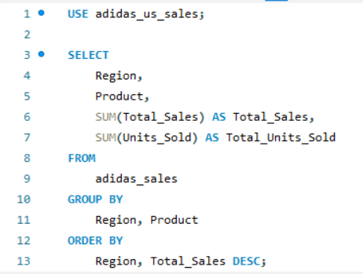

Adidas US Sales Analysis
1. Introduction
In this project, I will conduct an in-depth analysis of the Adidas US Sales Dataset, focusing on critical business metrics such as revenue growth, operating efficiency, and regional product performance. The objective is to uncover trends in customer demand, assess the profitability of different product lines, and identify high-performing regions and sales channels. Through data-driven insights, I will provide actionable recommendations aimed at optimizing business strategy, driving revenue growth, improving operational margins, and enhancing regional sales performance. This analysis will also offer insights into consumer behavior, enabling Adidas to refine product offerings and tailor marketing efforts to maximize profitability and market share.
2. Dataset Walkthrough
The Adidas US Sales Dataset contains detailed information on sales transactions across various retailers, regions, and product lines. This detailed walkthrough of the dataset provides an understanding of each variable's role in driving the analysis. Below is an overview of the key fields in the dataset, along with their data types and relevance to the analysis:
1. Retailer (VARCHAR): The name of the store or business that sold Adidas products. This is crucial for analyzing retailer performance and identifying top-performing partners.
2. Retailer ID (INT): A unique identification number for each retailer. This field will be useful when aggregating data across multiple retailers or linking data with other sources.
3. Invoice Date (DATE): The specific date of the sales transaction. It allows for time-based analysis, such as sales trends over time, seasonality, and growth comparisons.
4. Region (VARCHAR): The broader geographic area where the sale took place (e.g., Northeast, Midwest). Analyzing by region helps identify regional demand, underperforming markets, and potential opportunities for expansion.
5. State (VARCHAR): The specific state where the sale was made. Along with regional data, this helps in understanding localized sales performance and assessing state-level trends.
6. City (VARCHAR): The city where the sale occurred. City-level analysis can uncover specific urban centers with high sales volumes and areas where targeted marketing efforts might increase profitability.
7. Product (VARCHAR): The type of Adidas product sold, such as footwear or apparel. This column will be key for identifying top-performing product categories and demand patterns for different types of products.
8. Price per Unit (DECIMAL): The price at which each unit of the product was sold. Price data allows for analysis of average selling price, price optimization strategies, and comparisons across retailers and regions.
9. Units Sold (INT): The number of units sold in each transaction. This column, combined with price and sales, provides insights into product demand and inventory management.
10. Total Sales (INT): The total revenue generated from the transaction (calculated as Price per Unit * Units Sold). This is a key metric for assessing the financial performance of different products, retailers, and regions.
11. Operating Profit (INT): The profit generated after deducting operational costs from total sales. This column allows for assessing the profitability of each transaction as well as calculating profit margins for products and regions.
12. Operating Margin (DECIMAL): The operating profit as a percentage of total sales. This metric indicates the efficiency of generating profit from sales, a critical indicator for both product-level and overall business performance.
13. Sales Method (VARCHAR): The sales channel through which the product was sold, such as in-store or online. This is important for analyzing channel performance and making decisions about where to focus marketing and sales efforts.
3. Data Preprocessing
To ensure the dataset is clean and ready for import into SQL for analysis, I performed the following preprocessing steps in Excel:
1. Removing Empty Rows: Any rows with missing values were removed, as these could cause issues during analysis. This ensures that the dataset is complete and every record is useful.
2. Converting Operating Margin to Decimals: The "Operating Margin" column, initially a percentage, was converted to decimal format to facilitate better comparison and calculation in SQL (e.g., 25% becomes 0.25). This aids in easier mathematical operations during the analysis.
3. Reformatting Columns:
- Price per Unit, Operating Profit, Units Sold & Total Sales: Removed any commas and dollar signs to treat these as numerical values.
- Invoice Date: Ensured that the "Invoice Date" column is in a consistent date format (e.g., YYYY-MM-DD) for time-based queries.
4. Normalization of Sales Method and Region: I standardized the entries in the "Sales Method" and "Region" columns by correcting any inconsistencies in spelling or formatting to make them uniform.
5. Removing Duplicate Rows: I checked for and removed any duplicate rows to avoid skewing the results, ensuring each transaction is unique.
6. Ensuring Data Consistency: I ensured consistent case (upper or lower) for string data (e.g., city names, retailer names) to avoid mismatches during queries.
4. Analysis
Based on the goals of this project, I wrote these SQL queries to help analyze the dataset to reach informed conclusions and make appropriate recommendations:
1. Revenue Growth Over Time:
2. Operating Efficiency:
3. Regional Product Performance:

4. Retailers' Performance:
5. Sales Channels Performance:
5. Conclusions
1. Revenue Growth Trends: The analysis of monthly revenue shows a significant increase from 2020 to 2021, with fluctuations due to potential seasonality and external factors (e.g., the impact of the pandemic in 2020). Notably, there is a major surge in January 2021, indicating strong recovery or a promotional period.
2. Operating Efficiency: Products such as Men's Street Footwear and Women's Apparel exhibit high operating margins (39.65% and 38.34%, respectively). This indicates that these categories are highly profitable and efficient in generating revenue relative to their operational costs.
3. Regional Product Performance: The Midwest and West regions have strong sales performance across different product lines, especially in Men’s Street Footwear. The West region particularly stands out with higher sales volumes and profitability compared to other regions, suggesting greater consumer demand and market penetration.
4. Top Performing Retailers: Retailers like West Gear and Foot Locker dominate sales and profit performance, contributing significantly to Adidas' revenue. This highlights the importance of focusing on these retail partners for maintaining and expanding market share.
5. Sales Channel Performance: In-store sales contribute the most to total revenue and profit, followed closely by outlet sales. However, online sales, while trailing in total sales, show a strong profit margin, reflecting lower overhead costs compared to physical store sales.
6. Recommendations
1. Expand Online Sales Strategy: Although online sales are currently behind in-store and outlet channels, they are showing strong profit margins. Adidas should consider increasing investment in e-commerce platforms, optimizing digital marketing efforts, and providing online-exclusive deals to boost online revenue further.
2. Target High-Margin Products: Focus marketing and sales efforts on high-margin products such as Men's Street Footwear and Women's Apparel. Increasing inventory and promotional activities for these items can drive higher profitability.
3. Enhance Regional Strategies: The West region demonstrates strong sales performance across multiple product lines. Adidas should consider expanding its presence in this region with targeted promotions and increasing inventory to maximize revenue. Additionally, underperforming regions like the Midwest could benefit from market research to understand consumer preferences and adjust product offerings accordingly.
4. Strengthen Key Retail Partnerships: Given that West Gear and Foot Locker are top-performing retailers, Adidas should focus on strengthening partnerships with these companies. Collaborations on exclusive product lines, joint marketing campaigns, and ensuring consistent stock levels could further enhance profitability.
5. Optimize Sales Channels: In-store and outlet sales are the dominant revenue channels. Adidas should continue to invest in improving in-store experiences, such as personalized customer service and immersive brand environments, while also exploring opportunities to integrate online and offline channels for a seamless omnichannel experience.